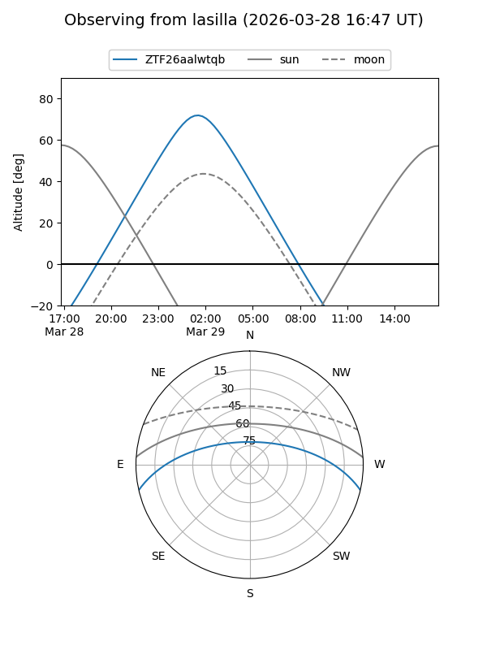
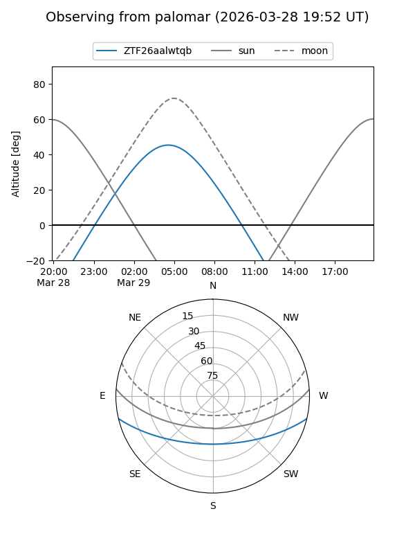

ZTF26aalwtqb
Target ZTF26aalwtqb at 2026-03-29 06:40
Aliases and brokers:
FINK: link
Lasair: link
ALeRCE: link
alt names
ZTF26aalwtqb (ztf,fink_ztf)
Coordinates:
equatorial (ra, dec) = 137.8456,-11.10528
equatorial (HMS+DMS) = 09:11:22.93,-11:06:19.00
galactic (l, b) = (240.9603,+24.38812)
Flags:
Photometry:
last ztfg=16.27, ztfr=15.87
1 ztfg, 1 ztfr detections
Lightcurve
Visibility


Additional plots